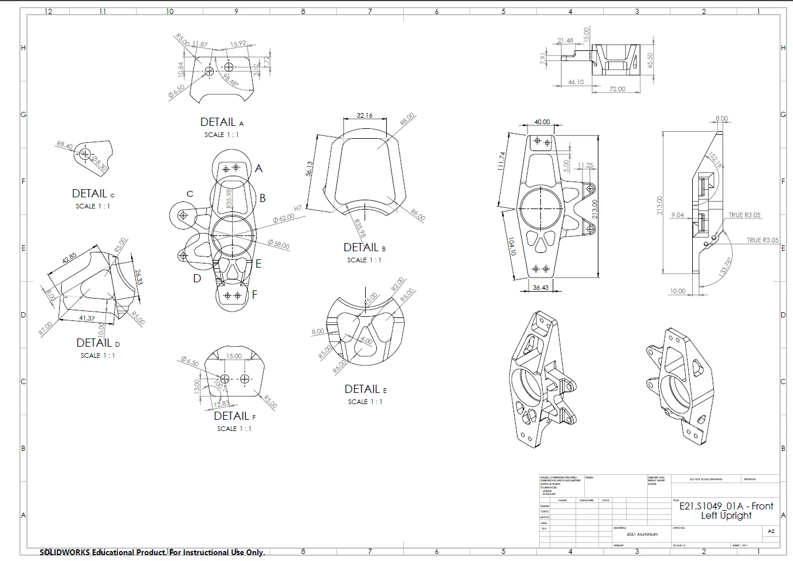
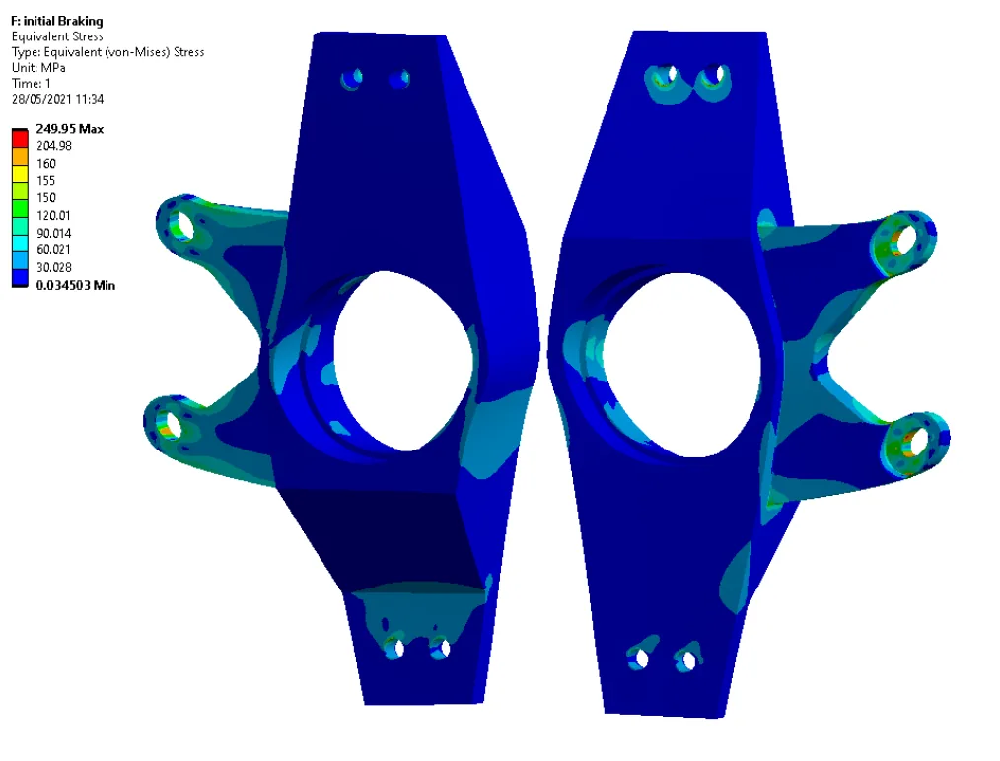

Formula Student · Lancaster e-Racing · 2020–21
Front Upright & Brackets
A front upright and its wishbone and steering brackets, designed from scratch for a new suspension geometry on Lancaster's 2021 electric Formula Student car, then machined in-house.

- 1.5Safety-factor target in every load case (160 MPa limit for 6061 aluminium)
- 0.53 mmPeak deflection under maximum braking, against a 1 mm limit
- 3Design load cases: maximum cornering, maximum braking and 3 g bump
- 2.35°Camber adjustment built in through a removable shim
Requirements
- Strength: safety factor of at least 1.5 under maximum cornering, maximum braking and a 3 g bump.
- Stiffness: total upright and bracket deflection no more than 1 mm, because extra movement shifts the rod-end positions and changes how the car handles.
- Packaging: fit inside a 248.2 mm rim, with the wishbone and steering pick-up points located exactly where the new suspension geometry needed them.
- Rules: Formula Student T10.2 positive locking on critical fasteners, so nyloc nuts with at least two full threads showing.
- Manufacture: machinable on the department's CNC mill without repeated re-fixturing.
Design
- Materials: 6061 aluminium for the upright body to keep unsprung mass down; EN24T steel (σy = 650 MPa) for the heavily loaded wishbone brackets; a 4 mm aluminium steering bracket, waterjet-cut and welded into a U shape.
- Iterative light-weighting: started from a solid block linking the mounting points, ran FEA, then removed material wherever it was under-stressed. The bearing walls were kept thick and the brake-mount roots filleted to ease stress concentrations.
- Carried over: only the bearings (two TIMKEN X30206M) and the bearing housing. The rest of the upright is new.
Loads and analysis
Upright loads were calculated with the method in Seward's Race Car Design (2014): the top wishbone mount is fixed and the bottom mount is free to move vertically. Tyre forces act through the bearing, braking forces act through the calliper bolts, and the bearing interference fit is applied as a pressure on the housing. The FEA used a 1 mm mesh, and refining it further changed the braking deflection by 0.04%.

| Load case | Deflection | Main-body stress |
|---|---|---|
| Maximum braking | 0.526 mm | Peaks of 155–160 MPa, at the limit |
| Maximum cornering | 0.102 mm | Within limit |
| 3 g bump | 0.0325 mm | Minimum safety factor 3.44 |
Limits of the analysis
The bracket bolt holes were modelled as idealised fixed supports, which produces stress singularities: local peaks above the limit that come from the boundary condition rather than the part. These were excluded, and the main body was assessed against the 1.5 target. The better approach is a full bolted assembly with preload and frictional contact. It was attempted but not finished before the manufacturing deadline. The steering bracket deflected 1.255 mm against the 1 mm target; that was accepted because the load inputs were deliberately conservative and thicker material would have caused manufacturing problems.
Manufacture
The upright bodies and wishbone brackets were CNC-machined in the department, and the bearings pressed in with a hydraulic press. Because of COVID-19, manufacturing could only start six weeks before the event, so the design was deliberately kept to geometry that could be machined in a single set-up.
Tools: SolidWorks, ANSYS Mechanical, CNC milling, waterjet cutting
← All projects